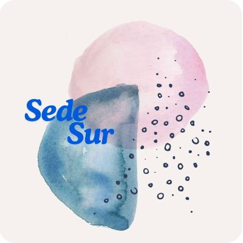

Sede Central
📍 Av. Apoquindo 123, Santiago
🕒 Lun a Vie 9-20hs | Sáb 10-18hs
🚌 Metro: líneas 10, 23, 45
♿ Acceso para sillas de ruedas
Accesibilidad totalArte para todos
Contamos con tres espacios culturales totalmente accesibles. Todos cuentan con rampas, baños adaptados y señalética en braille.
📍 Av. Apoquindo 123, Santiago
🕒 Lun a Vie 9-20hs | Sáb 10-18hs
🚌 Metro: líneas 10, 23, 45
♿ Acceso para sillas de ruedas
Accesibilidad total📍 Calle Lautaro 501, Los Angeles
🕒 Lun a Vie 10-21hs | Sáb 9-14hs
🚌 Colectivos: 15, 57, 130
♿ Rampa y ascensor
Accesibilidad total
📍 Avda. Arturo Prat 650, Temuco
🕒 Mar a Dom 15-22hs
🚌 Cerca del centro, 5 min caminando
♿ Estacionamiento reservado
Accesibilidad total